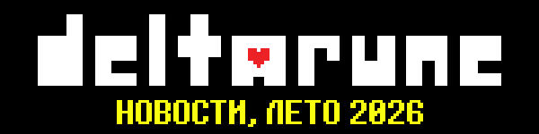
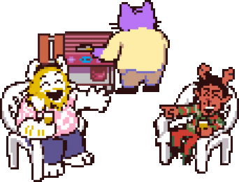
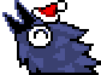
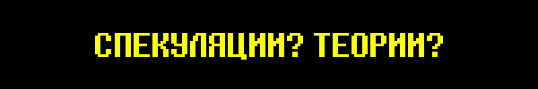
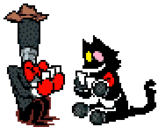
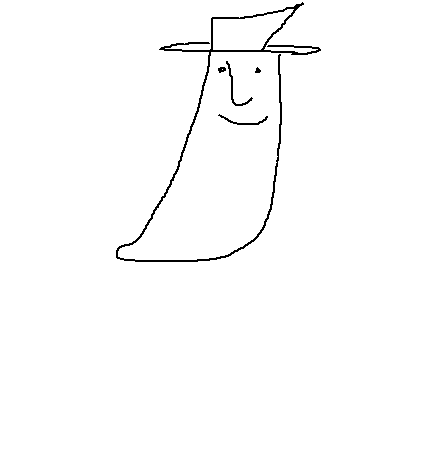

Лето… Можно оно уже кончится?

Около месяца назад вышла Глава 5.
Вы заметили?..
Меня радует реакция людей на Главу 5. Многие из друзей сказали, что им очень понравилось, а некоторые даже всплакнули. Игровой опыт каждого может отличаться, но если игра нашла в ком-то отклик, это уже даёт мне уверенности, что я иду в правильном направлении.
(Осторожно: спойлеры к Главе 5!)


Глава 5 получилась очень жизнерадостной, и, пройдя последнюю большую порцию безумств, теперь, разумеется, все хотят, чтобы DELTARUNE начала полноценно погружать нас в свои секреты. И я в числе тех желающих!
Глава 5 наконец подготовила нас ко всему необходимому перед главами 6 и 7. Отныне, с Главы 6, больше не будет странных глупых приключений и начинаются последствия всего, что вы за это время успели сделать.
Глава 6 — более короткая глава, которая прямо сконцентрируется на определённой части сюжета. По этой причине многое всё ещё не будет затронуто — вы даже можете удивиться отсутствию кое-каких вещей! Но, готовы вы или нет, одно здесь точно прояснится.
Кто-то может сказать: «Стоп! Главы надо делать длиннее, а не короче!» Ваши опасения совершенно понятны, но... к концу Главы 7 я уверен на 100%, что вы поймёте, почему я решил выстроить историю именно так. Не волнуйтесь о темпе игры, пока она ещё полностью не вышла!
Думаю, что у нас получится выпустить Главу 6 в 2027 году.
(На всякий случай скажу, что релиз Главы 6 будет отдельным.)
Недавно я дописал несколько новых сцен для последней трети Главы 6 и закончил с перестановкой комнат, чтобы всё вписалось в одну игровую структуру. Когда мы закончим с упорядочиванием и сложим всё воедино, у нас получится первый цельный вариант главы. За исключением серьёзных перестановок, основными пунктами в разработке останутся главный босс главы и доработка кат-сцен.


На самом деле я лично не читаю и не смотрю теории. Просто я и так уже знаю, что моя игра из себя представляет.
Тем не менее очень классно, что люди тратят столько времени на размышления об этой игре. Я не совру, если скажу, что думать о ней — такой же полноценный опыт, как и непосредственно её проходить. Я искренне благодарен всем, кто тратит время и осмысляет игру, как и я сам. Представлять, что может случиться дальше или какой смысл кроется в игре, — это правда круто.
Однако я бы хотел обратить ваше внимание: иногда у вас просто нет всей необходимой информации либо у меня были другие представления об интерпретации или соединении некоторых фактов.
Но несмотря на то что лучше бы не загадывать многое раньше времени, я всё-таки хочу, чтобы вы получали от этого как можно больше удовольствия.
Создание артов и сценариев по теориям во время продолжающейся разработки игры — это прекрасно и навсегда останется таковым. Ведь только В ТАКИЕ моменты можно создать что-либо подобное. Всё ваше творчество — это капсулы времени, уникальные для каждого мига среди тысячи других, и я думаю, что этим можно и нужно гордиться. Разве не здорово играть в игру — здесь и сейчас, пока она всё ещё разрабатывается?
Когда я был маленьким, мой старший брат часто придумывал всякие дурацкие анимешные фразы, делая вид, что атакует меня. «It's my Jarona! (Получай джарону!)» — одна из таких фраз. Были и другие фразочки, которые тоже попали в игру, а также невошедшая фраза «Blingo Blizzard! (Блинго-буран!)».
Ещё брат просил добавить фразу «It’s my hummingbird! (Получай колибри!)», но пока я это не сделал. (Интересно, сделаю ли?)


Кикки — это моя вечно орущая кошка. Если с ней не играть, она с каждой секундой становится всё громче и громче. Когда она увидела по телевизору собственную комнату, то не поняла, что смотрела на себя. Это как если бы кошачий мозг засунули в кошачье тело. Песня в комнате — это песня, которую я пою ей каждый день, потому что люблю её. Получается, это не «фансервис», а «киккисервис», хотя он ей даже не понравился. Она прямо щас мне мешает.

Fangamer выпустили новый мерчендайз по Главе 5. Планируется больше товаров — как по этой главе, так и по предыдущим (типа игрушка Королевы и т. д.).
Кстати, я предупредил ребят из Fangamer, чтобы они не планировали сильно много мерча по 6-й и 7-й главам.
Люблю и хочу кукурузы
удачных лета и кукурузы
